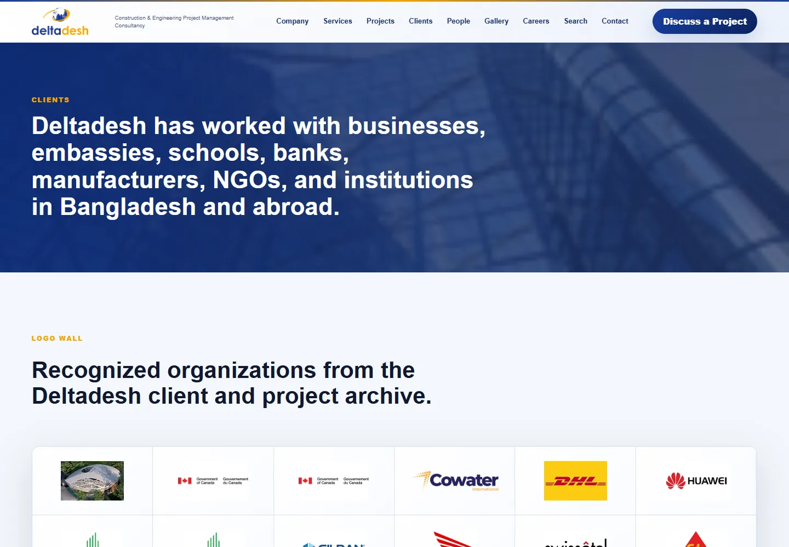

Client Production · 2025 Client work
Deltadesh.
A Dhaka-based consultancy needed a site that matched their ambition — premium people page, fully JSON-driven content, and an admin panel that let them update without touching code.

The problem.
Deltadesh was using a generic template that looked like every other consultancy in Dhaka. The team wanted their people front-and-centre — not buried in an "About" dropdown — and they wanted to update bios, headshots, and service copy without calling a developer.
What I built.
- Premium people page. Each team member gets a full-width card with photo, bio, specialties, and a direct contact link. Rendered from a Supabase table, updated via admin panel.
- JSON-driven content. Services, case studies, and footer copy all live in structured data. Non-developers can edit and see changes live without a deploy.
- Admin panel. A password-protected page (Supabase auth) for updating team members, toggling services visibility, and editing the company tagline.
- Render deploy. $7/mo instance. Auto-deploys from main. No DevOps overhead.
How I shipped it.
- Content audit first. Mapped every page, every piece of copy, every image before writing a line of code. Discovered three sections the client had forgotten they wanted.
- Supabase schema. Designed tables for team, services, and testimonials — all with row-level security so the admin panel can't accidentally expose draft content.
- Vanilla JS, no build step. The site loads fast, works without JavaScript for the core content, and is easy for future developers to modify without a toolchain tutorial.
- Three-week turnaround. Discovery to deploy in 21 days. Client's previous agency had been promising a redesign for nine months.
3wk
Discovery to live deployment.
$0
Developer needed to update content.
Outcomes.
21d
Ship time
100%
JSON-driven content
$7/mo
Hosting cost
0
Deploys needed to update copy
"Abedin shipped what our last agency had been promising for nine months — in three weeks. Then he stayed to maintain it."
— K. Rahman, Founder · Deltadesh
Like what you read? I can ship this for you.
Send a one-line scope and I'll quote within 24h. Three engagement shapes — fixed-price MVP, embeddable widget, or maintenance retainer.